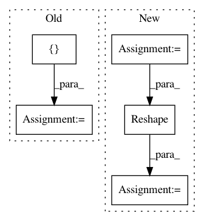

1b032e57960cb79f5d22e8fcf6295e307cd80198,anago/models/bilstm_cnn.py,BiLSTMCNN,_build_model,#BiLSTMCNN#,30
Before Change
def _build_model(self):
// build character based word embedding
feature_maps = [30]
kernels = [3]
char_input = Input(shape=(self.config.num_steps, self.config.max_word_len), dtype="int32")
x1 = TimeDistributed(Embedding(input_dim=self.config.char_vocab_size,
output_dim=self.config.char_embedding_size)
)(char_input)
x1 = CNN(self.config.num_steps, self.config.max_word_len, self.config.char_embedding_size,
feature_maps, kernels, x1)
// build word embedding
word_input = Input(shape=(self.config.num_steps,), dtype="int32")
x2 = Embedding(input_dim=self.embeddings.shape[0],
After Change
x1 = TimeDistributed(Embedding(input_dim=self.config.char_vocab_size,
output_dim=self.config.char_embedding_size)
)(char_input)
x1 = Conv2D(self.config.nb_filters, (1, self.config.nb_kernels), activation="tanh")(x1)
x1 = MaxPool2D((1, self.config.max_word_len - self.config.nb_kernels + 1))(x1)
x1 = Reshape((self.config.num_steps, self.config.nb_filters))(x1)
// build word embedding
word_input = Input(shape=(self.config.num_steps,), dtype="int32")
x2 = Embedding(input_dim=self.embeddings.shape[0],
In pattern: SUPERPATTERN
Frequency: 3
Non-data size: 5
Instances
Project Name: Hironsan/anago
Commit Name: 1b032e57960cb79f5d22e8fcf6295e307cd80198
Time: 2017-07-25
Author: light.tree.1.13@gmail.com
File Name: anago/models/bilstm_cnn.py
Class Name: BiLSTMCNN
Method Name: _build_model
Project Name: mil-tokyo/webdnn
Commit Name: 51bd1f486dbb44d63abfd891b163bcebd088f9a7
Time: 2017-06-29
Author: hidaka@mi.t.u-tokyo.ac.jp
File Name: src/graph_transpiler/webdnn/frontend/chainer.py
Class Name:
Method Name: _convert_reshape
Project Name: deepchem/deepchem
Commit Name: dc4eba996e003be0331cd78e7ba7c477f30f4e67
Time: 2018-05-23
Author: peastman@stanford.edu
File Name: deepchem/utils/test/test_generator_evaluator.py
Class Name: TestGeneratorEvaluator
Method Name: test_compute_model_performance_multitask_classifier